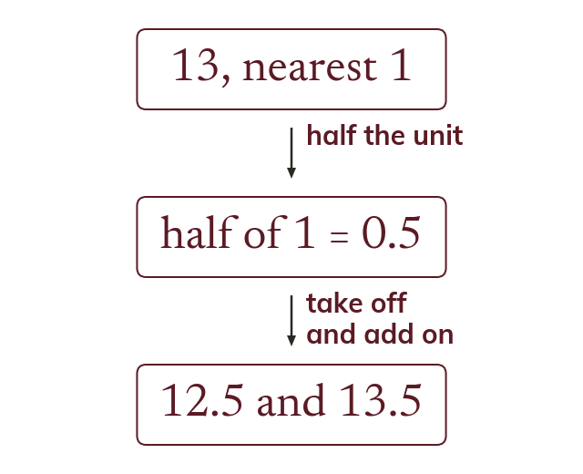

Half a unit either side
The bounds sit half a unit either side of a rounded value. So 13, to the nearest 1, lies from 12.5 to 13.5.
A rounded value stands for every value that rounds to it. The bounds sit half a unit either side, so 13 to the nearest whole number lies from 12.5 up to 13.5.